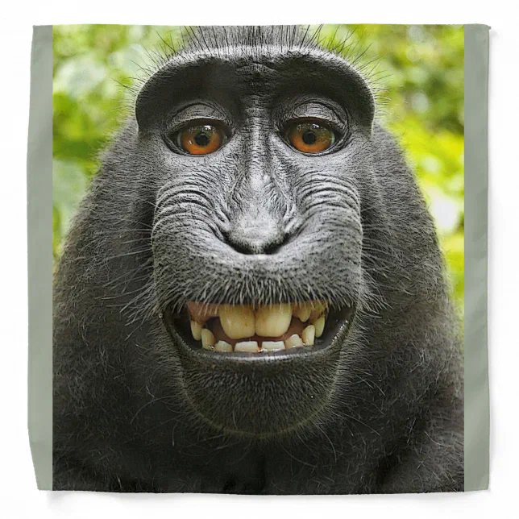

Quem Sou Eu
Olá! Meu nome é Bruno Henrique de Mello Junker, e faço parte do curso jovem programador no Senac!
Hobbies favoritos: Estudar, academia e pedalar
Estilos: Casual, esportivo, confortavel
Músicas Favoritas: eletronic, funk, trap
Filmes Favoritos: star wars, O Senhor dos Anéis, Matrix
Time Favorito: Flamengo
Link para meu GitHub: https://github.com/BrunoJunker/avaliacao-jp!
